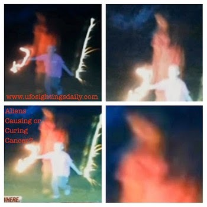
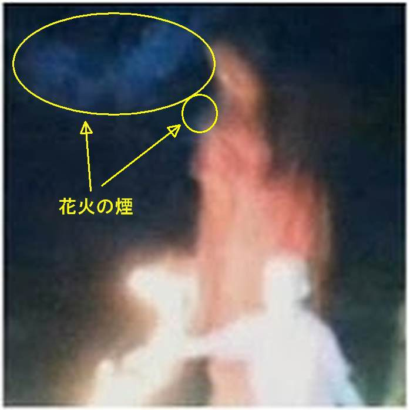
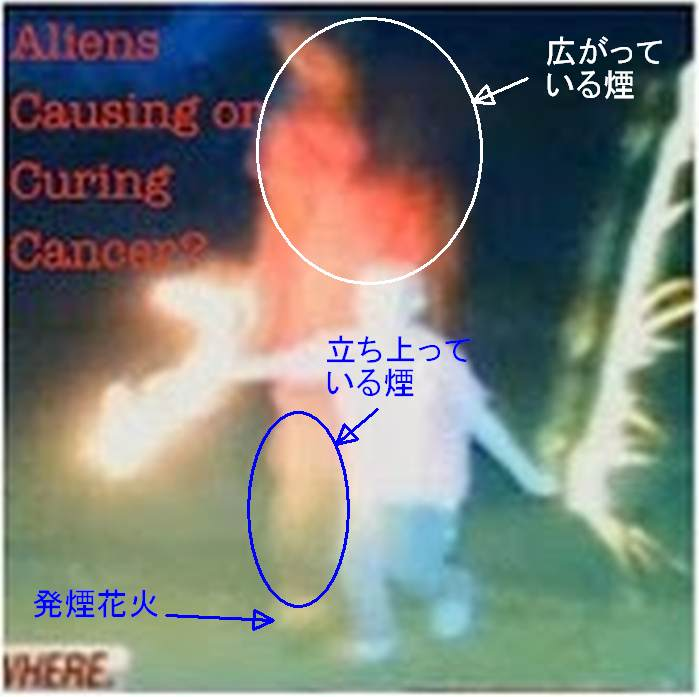
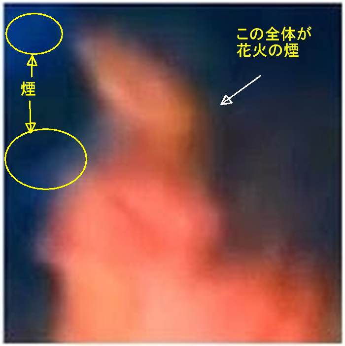

子供の後ろに写り込んだ「謎の女」の正体

Update
・（2018-02-07 追加）一つ前の記事（父親が撮影した UFO 写真）の記事を書いていて、この記事が未完だった事を思い出した。忘れない内に、答えを追加しておく。はじめに
・遊んでいる病気の子供を撮影したら、すぐ後ろに奇妙な女性が写っていた…という話。 ・下の写真を見ると…。子供の真後ろに、赤い半袖の服を着て、メガネをかけた髪の長い女性が立っている…ように見える。 ・撮影した時、娘の側に人は居なかったと父親は証言。父親は聖母マリアが娘の病気（白血病）を思いやって出現したのだと信じている。だが、ET だと見なしている人もいると。 ・下の写真をよく眺めれば、この「聖母マリア or ET」の正体にすぐ気づく。サイズが小さく、しかもブレてボケボケの写真だが、写真にはこの女性の正体に関するヒントが露骨なまでに写っているので楽勝な筈。 ・なお、この写真は捏造ではない。二重露光の類でもない。ガラスに反射したものでもない。たまたま近くにいた他人が写り込んでいたのでもない。カメラの異常でもない。撮影者に気づかぬように誰かが悪ふざけしたものでもない。もちろん、霊の類でもない。合理的に説明がつく。 ・この正体に気づいた人はコメント欄に正体を「示唆するヒント」を記入して下さい。正体を知っている人にはピンとくるけれども知らない人には意味不明なヒントが最適。 ・なお、前回のように数日で安易に正解を記載するのは読み手の推理の楽しみを奪うこととなり、興醒めだと思うので、回答者がいなければしばらく放置する予定。その場合、一月ほど後に正体を追記する（忘れていなければ…w）。引用
(2018-01-02)Child Cured of Cancer?
“A family from Kirkland, Ohio got a supernatural shock in May 2013 when they were looking over photos of their young daughter and noticed a figure hovering near her.” The father of the cured child believed that the ghost was Virgin Mary. Others believed that this may have been an alien being. “My reaction immediately, it's Mary, they hear us, she's there. I didn't necessarily see it as a sign that Erin is fine and is going to walk out of this, but it's a sign that we're watching over her." The report describes how the child was diagnosed with cancer. “Erin was diagnosed with leukemia in February 2007 and since gone through numerous bone marrow transplants. When the miraculous photo was taken, she was about to undergo her second transplant.” When asked to provide his opinion about those who were skeptical of the incident, Erin’s father provided a different opinion and remained firm on his belief. “I know she's not alone, I know we are not alone and people who don't want to believe it, that's OK. Whatever happened, you know something powerful and special was there with us I definitely have my moments when I'm falling apart and I'm terrified and I literally grab my phone and I stare at that picture." Ref: http://www.phantomsandmonsters.com/2014/10/alien-healing-claims.html
（以下、2018-02-08 追加分）はじめに
・例によってこの記事の事をすっかり忘れていたが、一つ前の記事で思い出した。なので忘れない内に答えを記載しておく。答え
・子供の真後ろに立っているように見える「赤い半袖の服を着て、メガネをかけた髪の長い女性」の正体は花火の煙がフラッシュ光に照らされたもの。 ・下の図解を見れば納得できる筈。答えの図解
  おまけ
・フラッシュ光に照らされた煙が「赤い半袖の服を着て、メガネをかけた髪の長い女性」に見えるのは単なる偶然の筈だが、ごくごく僅かながら、単なる偶然ではない可能性も考えられはする。 ・つまり…。Jung の言うところの「意味のある偶然」という可能性。その他
・たぶん他にも、UFO の正体の解答を追加するつもりで放置したまま忘れ去っている記事があるような気がするが、放置記事が多すぎてもう思い出せない…w ・具体的に該当記事を指摘した要望があれば（そして私がまだ答えを覚えていればw）できるだけ答えるつもり。（ただし Jonathan Reed と 介良 の件のシンボルについては以前に述べた事情により解答は差し控えたい） (2018-02-07)履歴
(2018-01-02) 作成 (2018-02-07) 完成
初出
治療中の娘を撮影、妙な人影が映り込む （→ その正体は…w） （全体） (2018-02-07)
この記事の完了度: